ACL 2026 · Main Conference
Data Pollination
An Emergent Ecological Process Driving AI Population Evolution
1Gaoling School of AI, Renmin University of China · 2Shanghai AI Laboratory · 3School of AI, Wuhan University
*Equal contribution · †Corresponding author: rui.yan@whu.edu.cn
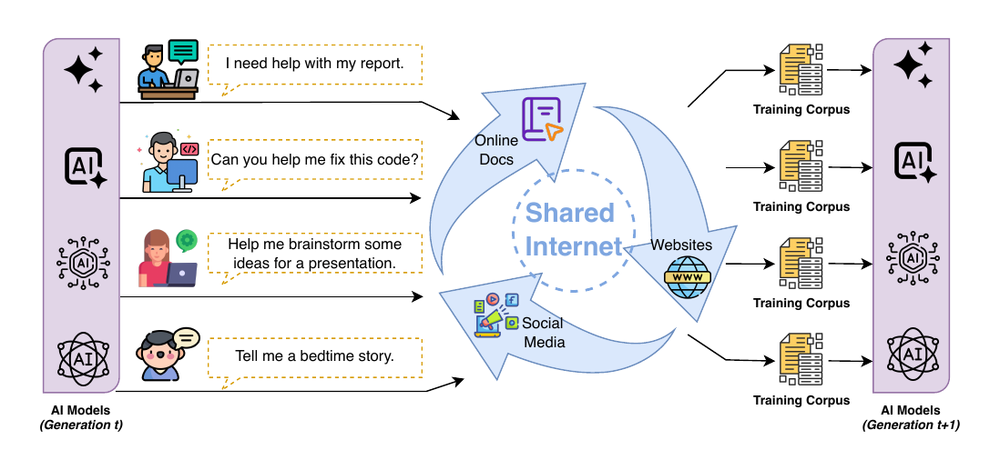
TL;DR
We argue that today's LLMs already form a de facto evolutionary ecosystem: user choices and web crawling create unintentional inheritance pathways across organizations — we call this data pollination. Formalizing it as a population-based evolutionary process and validating with 320 language models, we show that population dynamics prevent the model collapse that recursive single-model training suffers, with ecological diversity as the key resilience mechanism.
Abstract
AI development is often framed as the outcome of isolated research and engineering efforts, yet evidence from deployed systems suggests that language models interact through a shared data ecosystem. While the optimization of individual models is extensively studied, the emergent properties of this interconnected population remain largely unexplored, limiting our ability to predict long-term ecosystem trajectories.
We term this process data pollination — the unintentional circulation of synthetic model outputs through shared online platforms and web-scale training corpora — and formalize it as a population-based evolutionary framework to investigate stability dynamics under synthetic data training. Our theoretical analysis and controlled experiments involving 320 language models demonstrate that population dynamics can mitigate the model collapse observed in single-lineage recursive training, yielding stable or improving performance across diverse benchmarks. Crucially, we find that ecological diversity functions as a fundamental resilience mechanism that safeguards the ecosystem against collapse, highlighting the critical importance of maintaining model diversity for sustainable AI development.
Method — A population-based evolutionary framework
We formalize data pollination as a population of N language models that evolves through three operators abstracting deployed-ecosystem mechanics:
- Selection — a user-preference relation keeps the top k = √N models at each generation.
- Mutation — small parameter noise abstracts incremental retraining, quantization, and configuration drift.
- Crossover & data-mediated inheritance — offspring inherit parameters from one parent and train on the synthetic dataset of another, propagating behavioural traits through shared corpora rather than weight checkpoints.
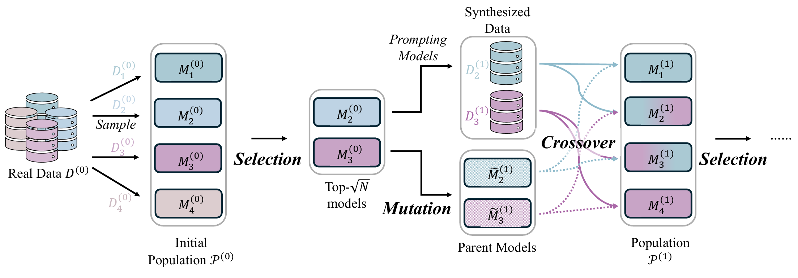
Results
RQ1 — Cross-family convergence in 27 deployed models
Stylometric fingerprints of 27 deployed LLMs across 5 families show that within- and cross-family similarity distributions are barely distinguishable (Overlap Coefficient = 0.313, Cliff's δ = −0.572). The asymmetry of directed influence over time rules out the “shared pre-training corpora” null hypothesis: newer models echo older models' fingerprints far more than the reverse — exactly the temporal signature data pollination predicts.
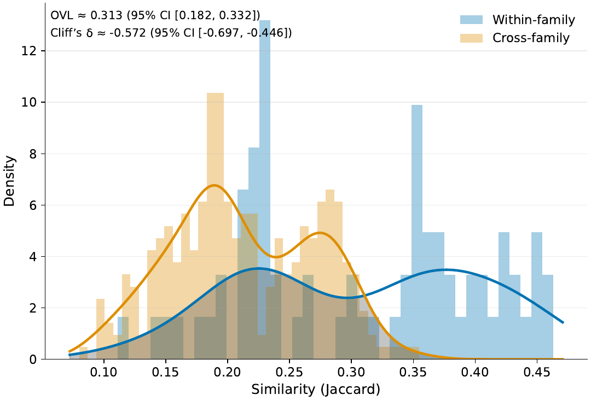
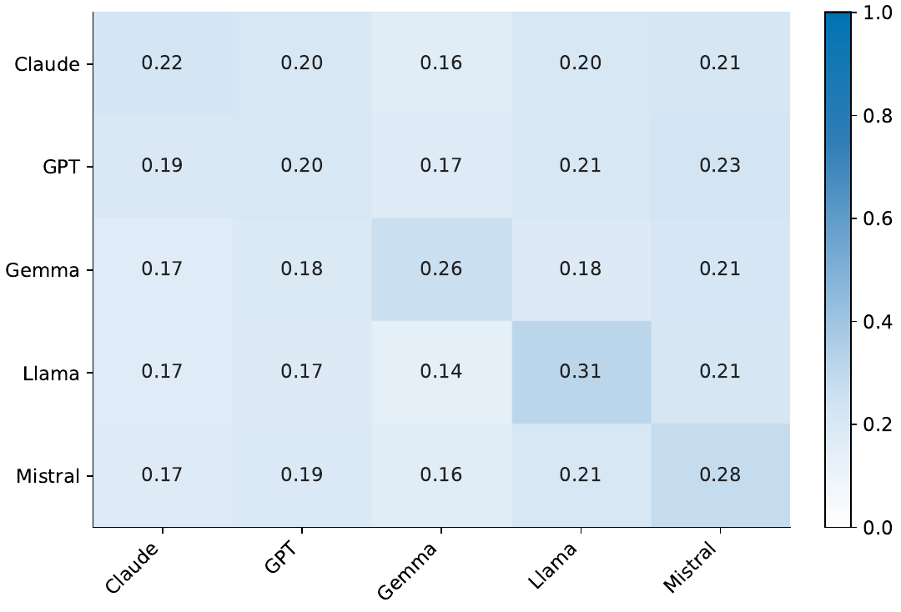
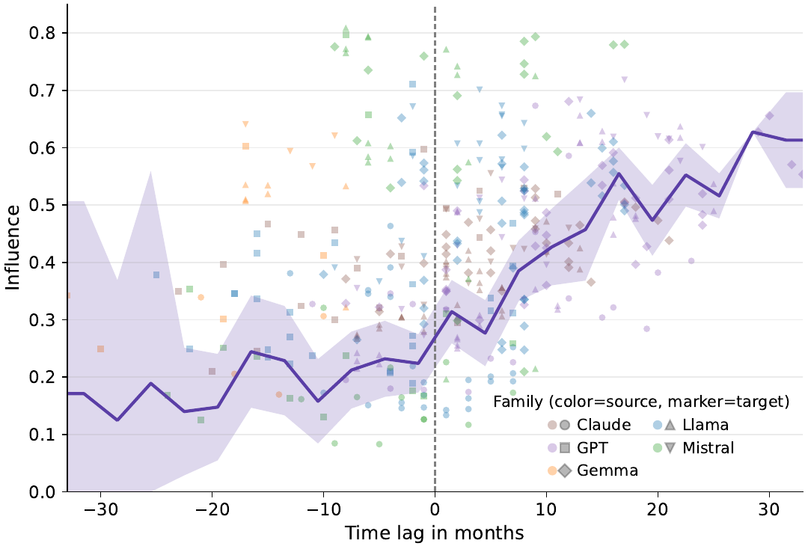
RQ2 — Population dynamics prevent collapse (320 models)
In a strictly synthetic-only setting with 320 models across four populations of N = 16 over five generations, evolutionary populations stay stable or improve on every benchmark, while single-lineage recursive baselines collapse as classical theory predicts. On reasoning tasks like MMLU and MathQA the population actually gains performance over generations.
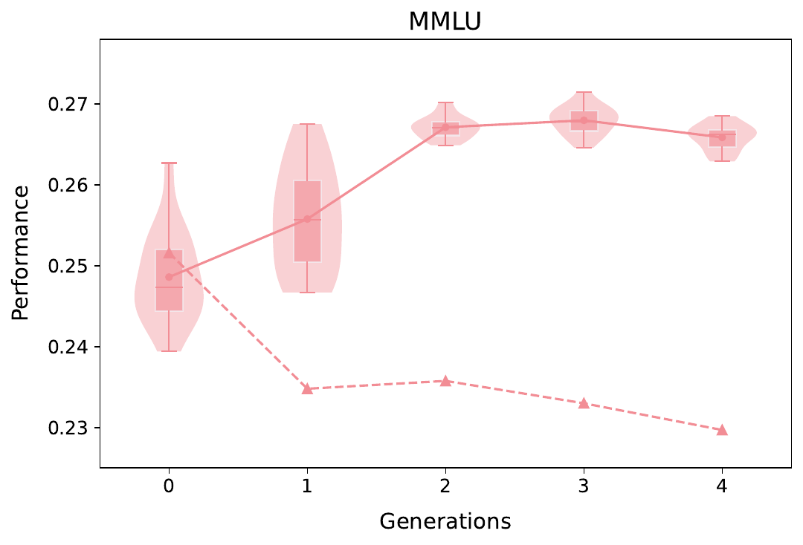
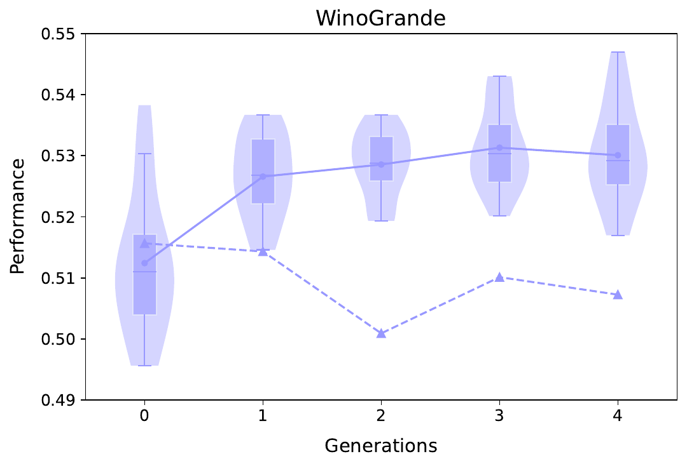
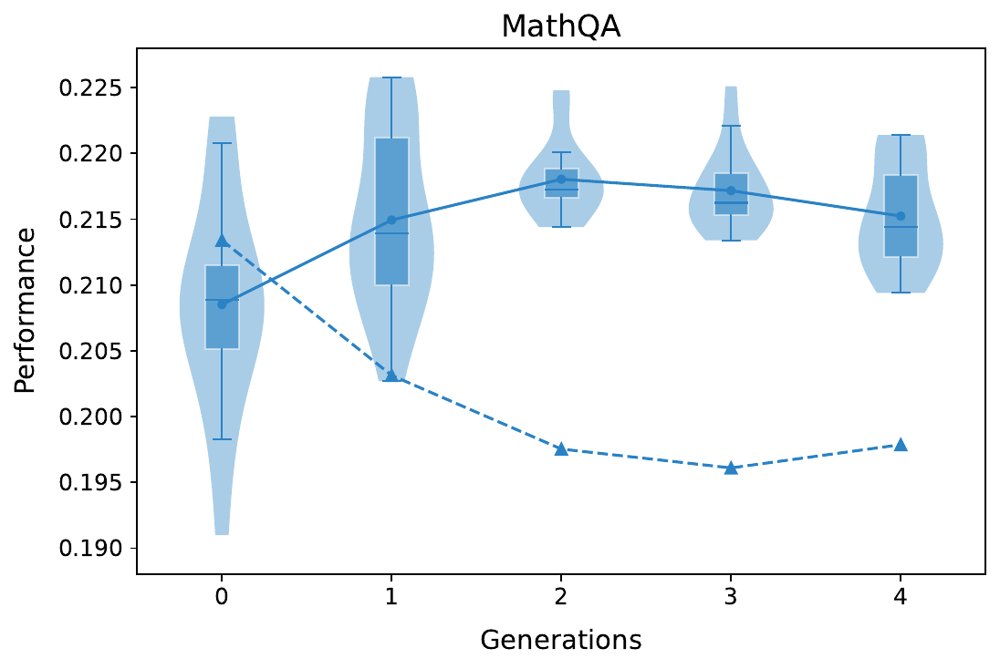
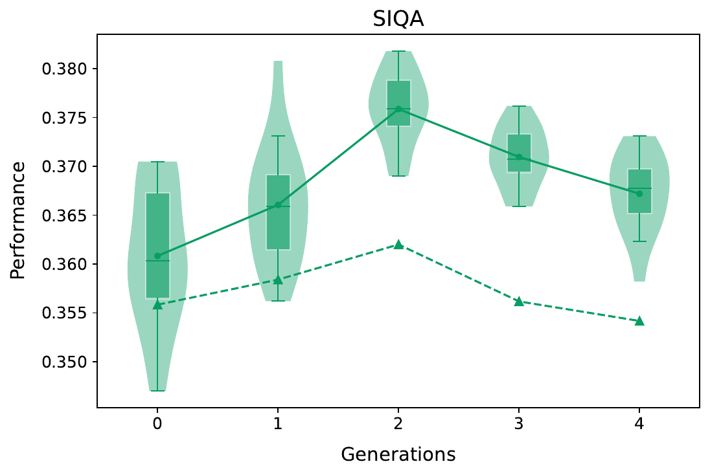
The qualitative trajectory tells the same story: population-based models stay grammatical and on-topic through generation 4, while single recursive models drift into URL-like, repetitive nonsense by generation 2.
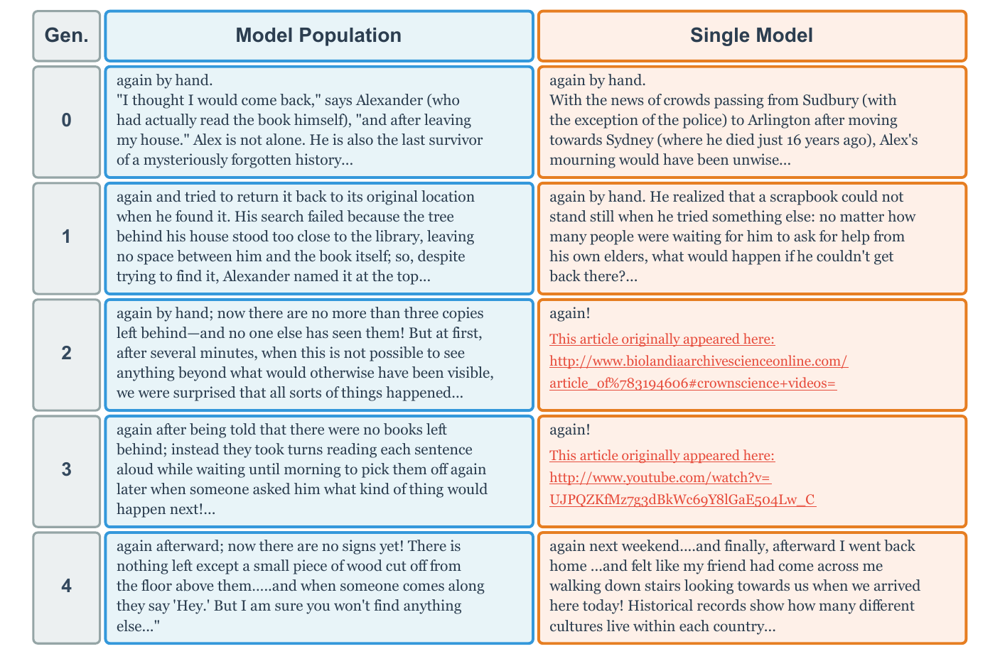
RQ3 — Why? Diversity as a resilience mechanism
For a population of K recursive Gaussian estimators, a Chernoff bound shows that the probability of every estimator being bad decays exponentially in K. Empirically, the population stays anchored to the ground truth even as individual estimators drift far away. The same intuition explains the language-model results: vary the population size and only N = 16 yields stable gains — a threshold effect mirroring biological resilience.
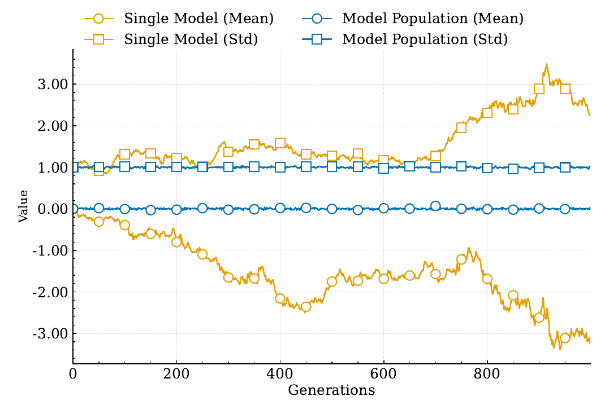
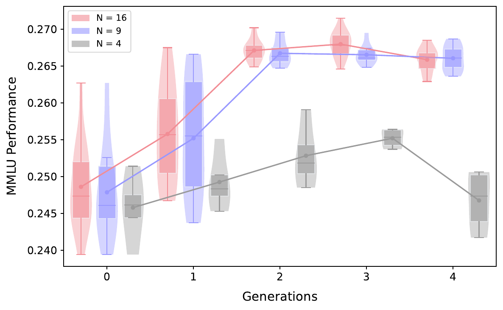
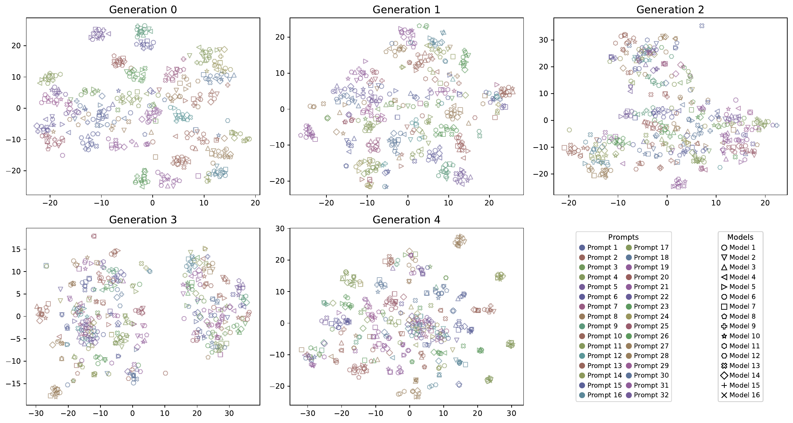
Takeaways
- Contemporary AI development is already a de facto evolutionary ecosystem shaped by data pollination across organizations.
- Population dynamics turn synthetic-data training from a collapse risk into a collective correction mechanism.
- Ecological diversity — not just better individual optimization — is a prerequisite for sustainable AI.
- Treat population structure as a first-class design variable.
BibTeX
@inproceedings{xie2026datapollination,
title = {Data Pollination: An Emergent Ecological Process Driving AI Population Evolution},
author = {Xie, Shufang and Pei, Qizhi and Lv, Ang and Hu, Jingyang
and Wu, Lijun and Yan, Rui},
booktitle = {Proceedings of the 64th Annual Meeting of the Association
for Computational Linguistics (ACL)},
year = {2026}
}